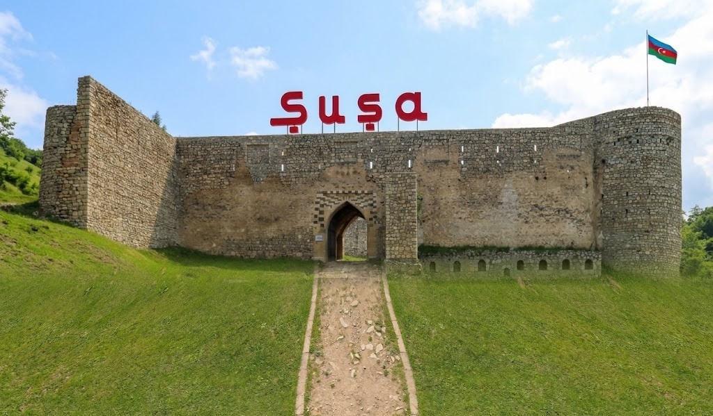

44 GÜN · 44 ADDIM · 44 HEKAYƏ
Xarıbülbül Azərbaycanın qədim və ecazkar torpağı olan Qarabağın, xüsusilə də Şuşanın rəmzi və simvolu kimi tanınan nadir çiçək növüdür.
Görünüşü incə bir bülbülü xatırladan bu bitki təbiətin unikal möcüzələrindən biri hesab olunur və yalnız Azərbaycanın bu bölgəsində bitir.
Odlar yurdunun azadlığı uğrunda canından keçən igidlərimizin xatirəsini əbədiləşdirmək məqsədi ilə Xarıbülbül Vətən müharibəsində şəhid olanların rəmzinə çevrilmişdir. Bu səbəbdən hər il xüsusi günlərdə döş nişanı olaraq taxılır və xalqımızın qürur mənbəyidir.
Azərbaycanın mədəniyyət paytaxtı Şuşada keçirilən ənənəvi "Xarıbülbül" musiqi festivalı da məhz bu çiçəyin adını daşıyır.
